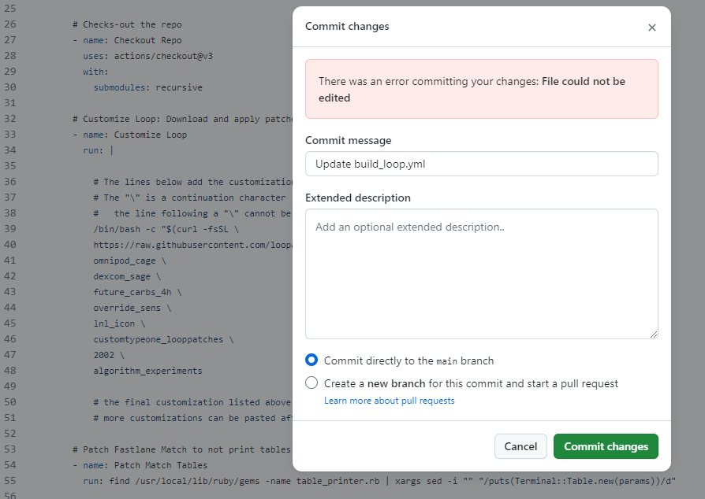
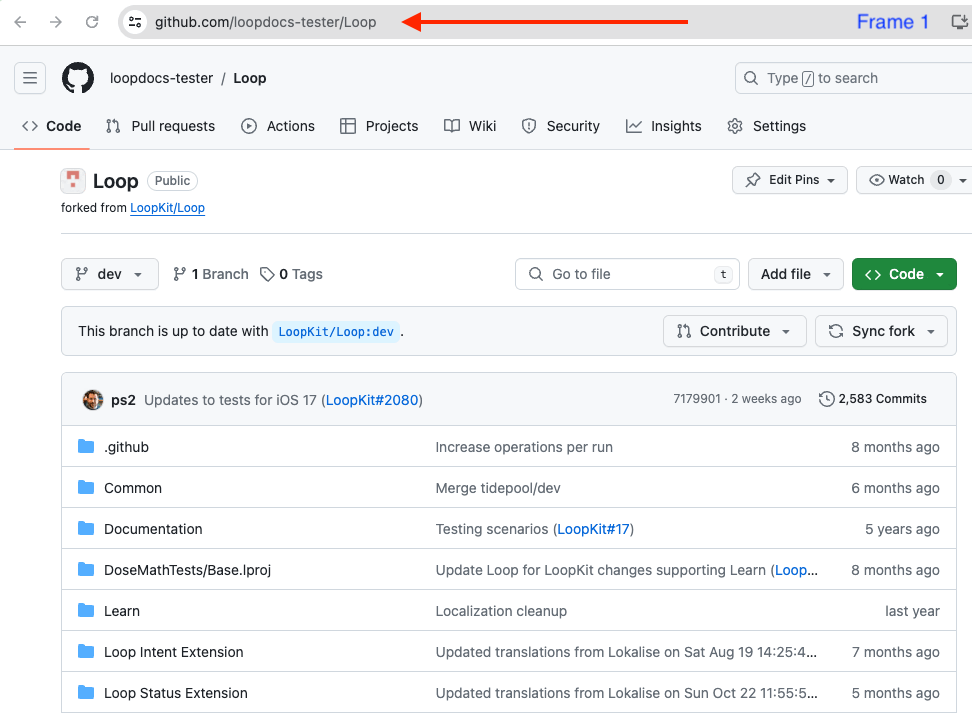
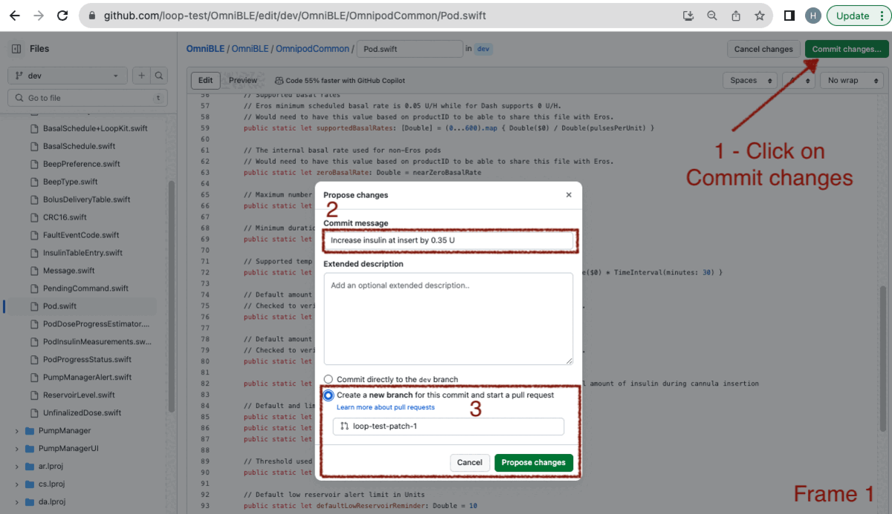
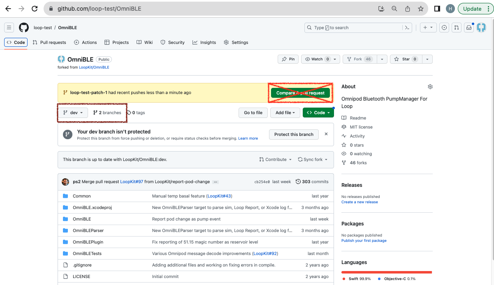
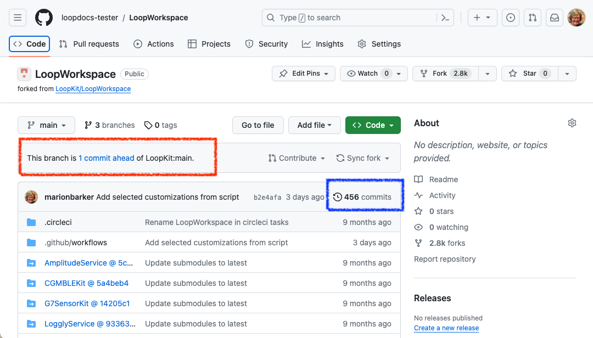
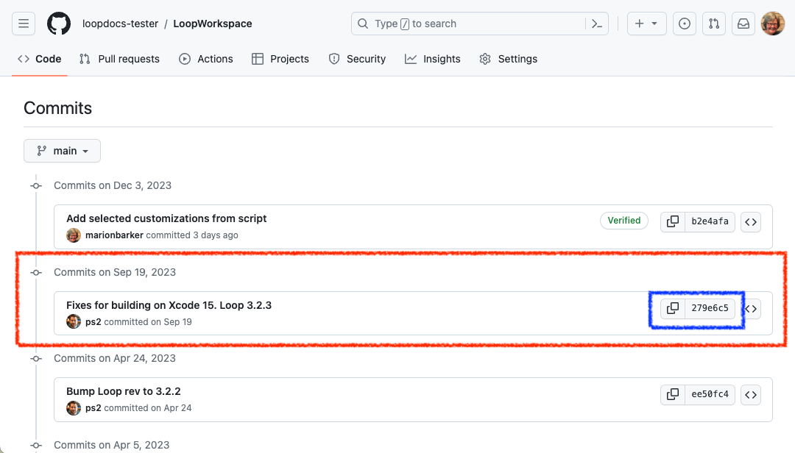
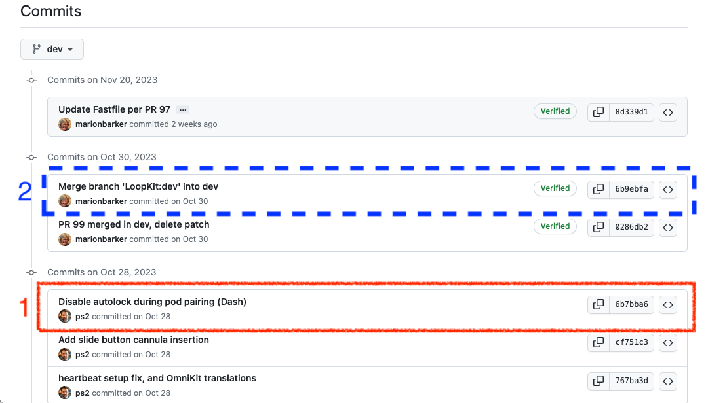

Custom Edits with Browser
Hot Topics¶
Pro Tip
The method on this page allows you to create a set of personalized customizations that you can use in addition to the Loop and Learn: Prepared Customizations. You can use (and re-use) your customizations with either Browser Build or Mac builds so you don't have to repeat the customization with every update.
- If you are building with Mac method, you can use the same lines prepared for Build with Browser method and simply paste them in your terminal at the LoopWorkspace folder to customize your code
- You can often use the same customization for several releases
- If a customization that you prepared for an older release says "does not apply" when you use it, you'll need to prepare a new one
Modules vs Submodule
This page has instructions to set up your own fork for the Modules, otherwise known as submodules, associated with LoopWorkspace that are needed for a selected customization.
Each Module has its own GitHub repository;and you will be working with your fork of that Module at https://github.com/username/Module, where username is your username.
What is a SHA-1?
SHA-1 means Secure Hash Algorithm 1; which is used to generate an alphanumeric code.
Each time you save a change to your GitHub repository, a unique SHA-1 is created. That identifier is used to tell GitHub a specific change that you want applied or identifies a specific version for that repository. These work for any compatible fork from the original GitHub repository.
Do Not Make a Pull Request to LoopKit GitHub Username¶
Ignore Compare & pull request Prompts
Please do not click on boxes that GitHub might show you that ask if you want to Compare & pull request.
This would be an attempt to merge changes from your fork back to the original version that everyone uses. These changes are for you only. Ignore those prompts.
Overview¶
Time Estimate
- About half an hour to an hour per Module
- Typically 1 or 2 Modules
- Ten minutes to add patch lines to your build_loop.yml file
- One minute to start the build
- An hour before the build shows up on your phone in TestFlight
Summary
- Prepare Customization (One Time):
- Once you have prepared a given customization, you can use it again with each update
- If there is an update (new release) and the customization is no longer valid - you will get a clear error message
- Just follow the steps on this page again to replace the customization that did not work
- If there is an update (new release) and the customization applies with no errors, then you do NOT need to create an update
- It is a good idea to test each customization as soon as you install the new build on your phone
- LoopDocs: Decide on Modules to modify using the Version: Custom Edits page
- You only need to create your own customization if what you want is not provided at Loop and Learn: Customization List
- If there are customization not provided by the Customization List, then you need to make presonalized edits
- This current page explains how to make the edits using a browser
- The Version: Custom Edits gives instructions on identifying the Module, finding the file and editing the line(s)
- GitHub (each Module):
Forkthe Module (if needed) - this is yourforkwhere you will make changesSyncthe Module (if needed)- Make the desired modification(s) using the pencil tool
- Save your changes
- Prepare lines needed for each customization and save
- GitHub (LoopWorkspace) - using your
forkwhere you will make changes- You will use the pencil tool to edit build_loop.yml
- Add customization lines to the file
- Save your changes
- Action 4: Build Loop
- Phone: Install with TestFlight
FAQs
- Do I need a Mac computer? No. This can be done on any browser.
- Should I build without customizations first? Yes. Make sure the build process works without customizations. You don't need to install the build on your phone, just make sure it builds without errors before you start modifying.
How to Customize Build with Browser¶
You do this using any browser on a computer or laptop. (Phone is not recommended - screen is too small.)
There is some background information at the bottom of this page starting at LoopWorkspace if you want to know what you are doing. Otherwise, just follow the steps like a cookbook.
Decide Which Modules You Want to Modify¶
Decide which Version: Custom Edits changes you want to make. Each customization lists a Module name.
- DASH Pods: Use OmniBLE
- Eros Pods: Use OmniKit
- Other Modules are Loop and LoopKit
- Do not get confused later: LoopKit is both a username and a Module name
- Refer to the Module Table when directed
Look also at the Stable line for the desired customization:
- Stable: Yes or Changed on date
- The method for applying that customization differs slightly in the instructions below based on that notation
- The customizations that are not stable, are summarized in Not Stable List
Outline of What Happens in the Module¶
Review Only
Review this section so you know what to expect. The actual steps will come later, starting with Create your Fork for Selected Module or Personalized Customization for this Module.
In the next sections, the exact process for making changes will be documented. But the steps may feel confusing. There are no links here because you are supposed to review the steps before taking action in the next section.
- First time for this module:
- Make a
fork - If the customization you want is not "Stable" and you are building
main- Create a new
branchfor yourforkusing the SHA-1 table
- Create a new
- Make a
- Change the line(s) of code desired for your customization(s) in your
fork - Save the change(s) using descriptive comments
- Repeat until done with this Module
Later, you will use information from your fork to create your customizations. (Suggestion - use same file as your Secrets, or at least keep the customization file in the same folder). Details are found at the Prepare the Customizations section.
Error Committing Your Changes¶
What should you do if you see the message:
There was an error committing your changes: File could not be edited
This is fairly rare, but it can happen. A user got this error when editing a file using GitHub:

The solution was to make sure the email address in their GitHub profile was correct. See GitHub Discussions for more information.
Create your Fork for Selected Module¶
Choose your link:
- New
Fork: if you do not have aforkof this Module - Code Updates: if you are returning after a new release and the customization you used before no longer works
- Existing
Forkfor Module: if you have aforkbut need guidance on whether it is the rightfork
Code Updates¶
New Release
If you have previously used this process for a prior release, use the same Modules you already copied.
You can often reuse customizations that you created earlier even with a new release. Attempt to use your existing patches before creating new ones.
If a customization did not work, then
- Go to your
forkof each Module - Make sure you are on the Default Branch for that Module
- Sync that Module to get the most recent version
Skip ahead to Personalized Customization for this Module.
New Fork¶
If you want a modification that uses a particular Module, you must make a fork of that module to your account in GitHub. You will repeat the Fork and Modify steps for each module.
- Log into your GitHub account
- Click the URL in the Module Table
- This opens a new browser tab at the URL of the module you need to
fork - Click on Fork, your
forkwill show up in the browser
Module Table¶
This table lists all the modules referred to on the Code Customization page linked above:
| Module | Fork From |
|---|---|
| Loop | https://github.com/LoopKit/Loop |
| LoopKit | https://github.com/LoopKit/LoopKit |
| OmniBLE (for DASH) | https://github.com/LoopKit/OmniBLE |
| OmniKit (for Eros) | https://github.com/LoopKit/OmniKit |
Remember - you can only have a single fork of a given GitHub repository. If you already have a fork, you don't need another one; but it must be a linked to the URL listed the Module Table.
I already have a fork
Go to Existing Fork for Module and follow the directions.
Default Table¶
When you "fork a repository", the default branch is the one that should be forked.
| username/Repository | Default |
|---|---|
| LoopKit/Loop | dev |
| LoopKit/LoopKit | dev |
| LoopKit/OmniBLE | dev |
| LoopKit/OmniKit | main |
Create branch if needed¶
- If the customization you wish to prepare indicates Stable: Yes, you can skip ahead to Personalized Customization for this Module
- If you are preparing a customization for the
devbranch, regardless of the Stable notation, there is no need to create a specialbranch, simply update the default branch to the latest (sync it) and use the current version of the customization when you skip ahead to Personalized Customization for this Module - Otherwise, when you a preparing a customization where the file changed sufficiently between
mainanddevand you want to build themainbranch, you need to create a branch for this Module that is consistent with the version you wish to customize.
Open your browser to your https://github.com/username/Module URL. If you already created the branch you need, you do not need to create a new one.
If you are customizing a released version, use the Table of SHA-1 under your version number below. Copy the SHA-1 for your Module so you can paste it into the URL in Step 2 below. Notice the suggested branch name for that table. You will use this in Step 3.3 below.
You should create a branch following the numbered steps and watching the GIF. Each Frame in the GIF corresponds to a numbered step below.
- Click on URL line as indicated by the arrow
- Add the text
/tree/SHA-1where you change SHA-1 to be the value in the table below and hit return - Create a new branch in three steps
- 3.1: Click on the dropdown under the
branchicon - 3.2: Type the suggested new
branchname in the blank space - 3.3: Click on the create
branchbutton
- 3.1: Click on the dropdown under the
- You should see a screen similar to the example below
- Do not click on the Create Pull Request button that is marked with a big X

Table of SHA-1¶
This will be updated with each release. The versions for the dev branch are not reported here because they are frequently updated. If customizing dev, use the default branch for each Module and sync that branch if needed.
Version 3.2.3¶
Suggested branch name is v-3.2.3
Repository |
SHA-1 |
|---|---|
LoopWorkspace |
81a3d9b03305a4b2a844bd6bac14a14f27626fef |
Loop |
c6b058b4276681600979aaeba518c635f06ac135 |
LoopKit |
9835a29f1bac9f75023f39c376479a2e6a6c8ccd |
OmniBLE |
f21360781c0b8eee26c531d20f1b0aa192a227f2 |
OmniKit |
c1e0d395975c93d15b3f84ac21097e40b7d5d93f |
Personalized Customization for this Module¶
Navigate to the file you need to modify (using the instructions to find the lines from the Version: Custom Edit page)
Pro Tip
Look at the files you want to change - if more than one change is desired for a single file - do them at the same time.
This section provides the steps to make a single customization for the Module. If you need more than one, just repeat the process and make additional ""patch" branches.
Example GIF¶
The GIF showing the creation of one customization is shown below. Please review the 4 frames of the GIF, read the detailed instructions below and then review the GIF again. In case you are concerned by the "Pull Request shown here; this is to your own fork, not back to the original.

Detailed Instructions¶
You will be using the "pencil" tool in the browser display for your fork.
Are there detailed instructions?
For more information about editing with GitHub:
The bullets below go with Frame 1 of the GIF above:
- Once you make the change to a given file, click on "Commit changes" (upper right)
- Click in the "Commit message" box and replace the default "Update filename" with a comment about what the customization does
- Click on the second option near the bottom "Create a new branch for this commit"
- Note: when you do the LoopWorkspace modifications, you will not choose this option
- Click on the "Propose changes" button
- As soon as you do this, a new "branch" is automatically created with a name like username-patch-#, where the number increments each time
The bullets below go with Frame 2 of the GIF above:
- You will be shown a screen where you create a pull request to your own
fork(this does not go back to the original) - First review the changes (shown at the bottom) and then click on the "Create pull request" button
Between Frame 2 and 3 of the GIF, your display will look similar to the graphic below:

You see there an opportunity to "Compare & pull request"
- Do not click on that
- This would be an attempt to merge changes from your
forkback to the original
- This would be an attempt to merge changes from your
The branches selection is highlighted with a brown rectangle in the graphic above.
- You can use the drop-down menu or click on the word branches.
- Choose the branch you just created, i.e., username-patch-#.
Your screen should now look like Frame 3 of the GIF above:
- Click on the Clock icon to the right
Now your display should look like Frame 4 of the GIF above:
- The top line is the last thing saved (your customization)
- You need to record the very long alphanumeric number associated with this
- There is a copy icon to the right - click on it and save it in your text file along with a comment about the customization and record which module you used for the customization
For example:
# OmniBLE: Increase insulin at insert by 0.35 U
SHA-1 = 5e9f4f407ff5544663f496d2e3a5ed8aa4f32a68
Warning - that is not a valid SHA-1 for this change. Do not try to copy it and use it. You must make your own personalized changes.
Later on, you will create the actual command needed to insert into build_loop.yml so you can add this customization when your build the app.
Repeat this process until you've done all your customizations for this Module and then move on to the next Module.
Prepare the Customizations¶
Once you prepare the commands, then you will edit the build_loop.yml file of your fork of LoopWorkspace.
Ensure your fork is from LoopKit/LoopWorkspace
If your LoopWorkspace fork did not come from LoopKit/LoopWorkspace, then delete your existing fork and make a new one. See Already Have LoopWorkspace?.
- Do not use any other location to create your
fork - You may have used a different location for Loop 3.2.2
- This is not supported for Loop 3.2.3 or later
For each customization you want to include, create a pair of lines consisting of the comment (must start with a #) followed by the curl statement pointing to the SHA-1 that has the customization.
Prepare customization lines¶
Save the customization lines in your text file for later use in the build_loop.yml file.
# Module: File: code customization description
curl https://github.com/username/Module/commit/SHA-1.patch | git apply -v --directory=Module
where:
curlmeans copy from URL- username is your GitHub username
- Module is where you made the customization (Module is in multiple places)
- SHA-1 is the full identifier for the desired change; there is a copy button to make this easy
- adding
.patchafter the SHA-1 informs GitHub to format that code change so it can be applied to yourfork - the final
--directory=Moduleis critical to apply the customization to the correct Module
To view the exact code change associated with that patch, open a browser at the URL of https://github.com/username/Module/commit/SHA-1.
Update LoopWorkspace¶
The final step is to update your LoopWorkspace fork to apply these customizations by adding those customization lines into the build_loop.yml file.
Return to your GitHub fork for LoopWorkspace and make sure to sync it if needed.
- Find the folder .github/workflows and click on it
- Find the file build_loop.yml and click on it
- Click on the pencil (so you can edit this file)
- If you are building version 3.4
- Skip ahead to Add Personal Customizations to build_loop.yml
- If you are building from an older version of main (version 3.2.3 or earlier), this is left here for your convenience - it will be removed over the next few months - please update soon
- Locate line 31, which is just above the words:
# Patch Fastlane Match to not print tables
- Paste the contents of the block below so it comes before that section
- In the next section - you will need to modify the line number where you do the edits
- Locate line 31, which is just above the words:
# Customize Loop: Download and apply patches
- name: Customize Loop
run: |
# For each patch, edit comment line (keep the #) then update curl (and remove the #)
# Submodule Loop patches:
# Loop: Filename: customization details
#curl https://github.com/username/Loop/commit/SHA-1.patch | git apply -v --directory=Loop
# Submodule LoopKit patches:
# LoopKit: Filename: customization details
#curl https://github.com/username/LoopKit/commit/SHA-1.patch | git apply -v --directory=LoopKit
# Submodule xxxxx patches: Follow prototype above
Add Personal Customizations to build_loop.yml¶
Open the text file in which you saved the customization lines.
For a given submodule, paste the comment curl lines that you prepared in Prepare customization lines similar to the examples, near line 239, that are commented out and provided as an example. The best place to paste these is at the end of the # Customize Loop: Download and apply patches section and before the # Patch Fastlane Match to not print tables line.
The indenting needs to match, so tab or (shift-tab) to line up the columns.
It is best to leave a blank line between customizations.
Once you are done with all the edits for build_loop.yml you will commit the changes to your fork directly.
- Once you have finished the edits for build_loop.yml
- Click on Commit changes (upper right)
- Click in the larger box below "Update build_loop.yml" and summarize the customizations you added
- Click on the option to "Commit directly to your branch"
- NOTE: for LoopWorkspace fork - commit directly to your default branch
- Click on Commit changes
- You can make as many changes to build_loop.yml in your
forkas you want
When you are ready, it's time to build with your customizations.
Build with Customizations¶
At the top of the display, click on Actions.
- Click on Action 4: Build Loop
- Click on Run workflow on the right side
- Then click on the green Run Workflow button
Wait about 2 minutes before walking away to make sure there are no errors. If you get an error, then look for the first "did not apply" error message and fix the customization right before that line.
In about 1 hour, your customized app will be available for installation on your phone via TestFlight.
Customization and SHA-1¶
When you commit your customization to your branch of your fork, there is a new SHA-1 associated with that step. The SHA-1 for a given branch, typically main or dev identifies to a mentor exactly which version of code you used for your build.
The SHA-1 for customized code will not be recognized by a developer or mentor. If you are having a problem and need to ask for help you need to identify what the SHA-1 was before you added your customizations.
If you are on main branch and it is up-to-date, this is less of an issue. If you are on dev branch, that can require some investigation.
Ask for Help to Identify Your Base Version¶
The easy method is to provide a mentor with your GitHub username and they can figure out the base version you are using aside from customization. They can also identify the customizations you added.
Identify Your Base Version¶
If you want to do this yourself, this section explains the steps.
-
Step 1: In your customized
LoopWorkspace fork: tap onCodeat upper left- If your
forkis behind theLoopKitrepository, consider updating yourfork- Typically this can be done without changing your customization
- Because you added customizations, your
forkwill be ahead of theLoopKitrepository - An example is shown for the
mainbranch in the graphic below - it is onecommitahead ofLoopKitas indicated by the message highlighted by the red rectangle

- If your
-
Step 2: Click on the clock symbol, highlighted by blue rectangle in the previous graphic, to view the
commithistory - the history is presented in reverse chronological order -
Step 3: Look at the
commitdescriptions for yourfork; several examples are shown below- The last
commitmade by the developers that is included in yourforkis the one a mentor will recognize -
The first example is for
mainwith one customization- The row highlighted in red is the one a mentor will recognize
- The 7-digit alpha-numeric identifier for the
commitis highlighted in the blue rectangle - If you click on the copy icon beside it, the full SHA-1 is captured in your paste buffer but the first 7 characters are sufficient to identify your base version (before customization) to a mentor

-
The second example is for
devwhere theforkwas synched both before and after customizations were applied- Red rectangle labeled 1 is the commit a mentor will recognize
- Blue dashed rectangle labeled 2 is what GitHub adds when the user successfully syncs the
repository- note that the SHA-1 here is specific to this repo and does not help a mentor identify the base version of your build - The row above the red rectangle is a customization made prior to the sync
- The top row (above the blue rectangle) is a customizaiton made after the sync

- The last
Special Cases¶
Existing Fork for Module¶
What if you already have a fork of one of the modules?
Your existing fork is from a username other than LoopKit
- If you know this is a
forkyou do not care about, you can delete therepository. - If you care about this
fork, you are probably experienced enough to know how to solve the issue.
Instructions to delete a repository are found at GitHub Docs
Once deleted, go to Create Your Fork for Selected Module.
Background Information¶
LoopWorkspace¶
The LoopWorkspace repository is the umbrella organization holding all the pieces needed to build the Loop app. It provides a list of pointers to a specific version for each of the Modules used in the workspace.
- commit: a specific change to the code identified by the SHA-1; the most recent one indicates the most recent version of the code
- workspace: a grouping of several repositories (Modules) into a complete package
- LoopWorkspace: includes a list of the specific SHA-1 for each Module needed for the app
You are telling GitHub to apply specific customizations when it builds your app for you. It extracts from GitHub all the code needed, applies your specific customizations and then starts the build.